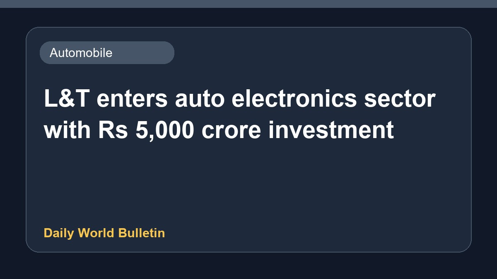

L&T enters auto electronics sector with Rs 5,000 crore investment

Engineering conglomerate Larsen & Toubro has officially marked its entry into the automotive electronics market by committing a substantial investment of Rs 5,000 crore. This strategic move highlights the company's expansion into new technological domains within the automotive industry. Further details regarding specific manufacturing facilities, timelines, and product portfolios remain limited as the corporation embarks on this significant financial and industrial venture.
Original source: Automobile News Sources
L&T enters auto electronics with a Rs5,000 crore cheque - Forbes India ↗
L&T enters auto electronics with a Rs5,000 crore cheque - Forbes India ↗